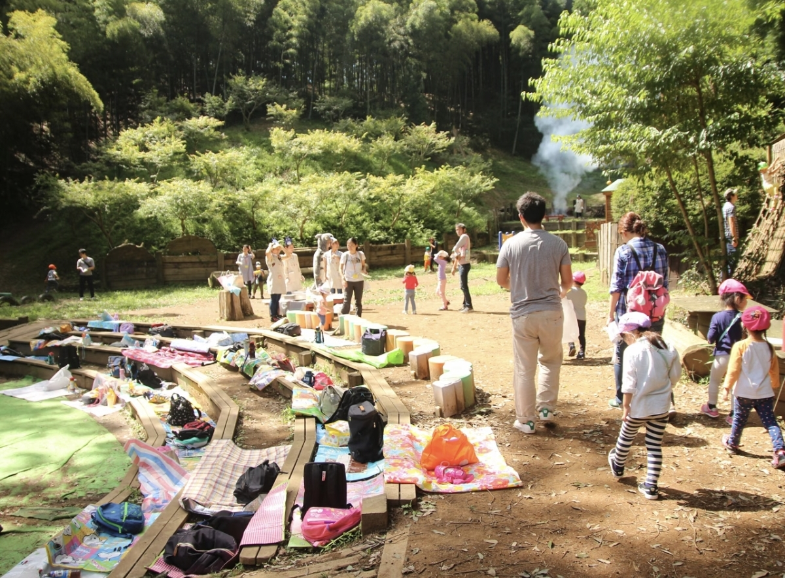
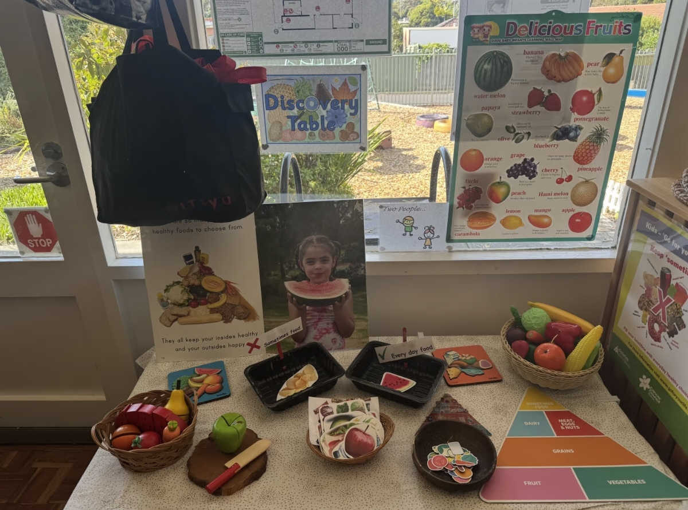
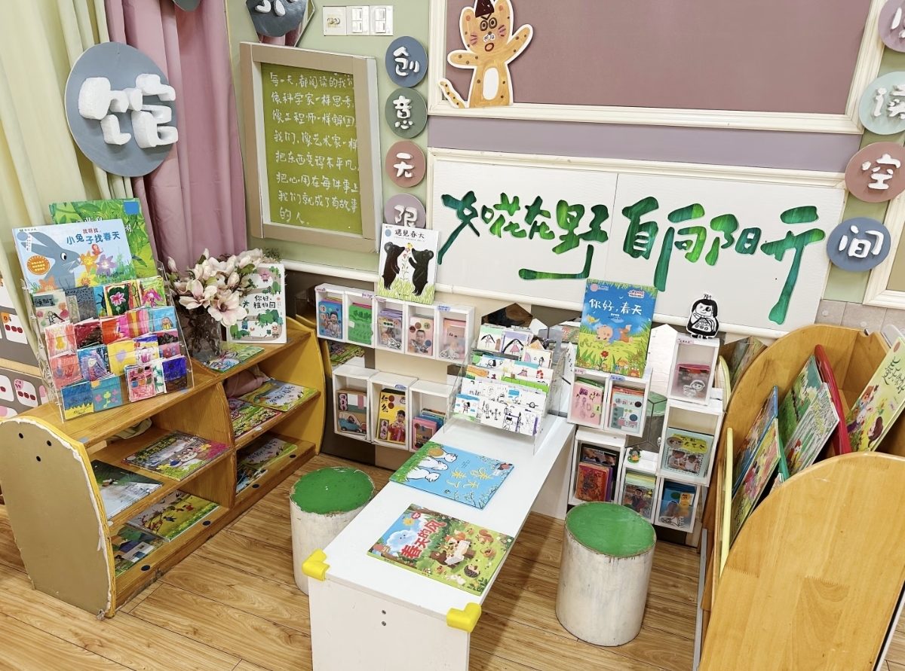

项目背景
AI是信息大模型，信息库如同海洋般广袤，其能力的上下限取决于使用者自身的认知和经验。因此，使用AI的关键在于如何训练AI的模型。对教师而言，AI能替代重复劳动、增加信息来源、提高创新能力。中国教育信息化网介绍了AI应用于教学实践的理论与大致方向，其核心是以五大领域为发展维度，围绕以人为本的教学观念进行实践应用。
查看中国教育信息化网原文章ABOUT · 为什么做这个项目
AI是信息大模型，信息库如同海洋般广袤，其能力的上下限取决于使用者自身的认知和经验。因此，使用AI的关键在于如何训练AI的模型。对教师而言，AI能替代重复劳动、增加信息来源、提高创新能力。中国教育信息化网介绍了AI应用于教学实践的理论与大致方向，其核心是以五大领域为发展维度，围绕以人为本的教学观念进行实践应用。
查看中国教育信息化网原文章训练AI模型需要时间成本，对使用者的调试能力也有较高要求。
AI生成的信息五花八门、质量参差，筛选与把关考验教师的水准：既要审核AI提供的信息、设置安全门槛，又要下达全面指令，让AI输出保持稳定、可重复使用。
不利于幼儿健康：AI需以电子产品为媒介，电子屏幕影响幼儿眼部健康，电子设备还存在漏电等安全隐患。
信息安全：使用AI意味着让AI了解幼儿及家庭的基本信息，容易泄露隐私，面临信息安全问题。
情感替代：这一劣势源于AI的过度拟人化，当AI过于接近真人时，容易在幼儿尚未形成完整的社会角色认知时，替代其父母角色。
FEATURES · 三个真实场景
三个幼儿园的AI应用案例：AI担任信息检索与启发角色，幼儿主动探索和实践。
5岁幼儿让豆包AI提供“搭丝瓜架方案”，再由自己动手搭建。
查看详情智能学伴“康康狮”陪幼儿做信息检索、知识图谱推理。
查看详情
用AI构建非遗“茂腔数字人”，带幼儿学戏曲身段。
查看详情三个案例的共同点这几个案例的共同之处：AI都是智能信息检索工具，用幼儿听得懂的方式输出知识，弥补幼儿实际经验和科学常识的不足；AI扮演启发者，幼儿则是实践者。
BALANCE · 客观看AI
AI能不能进幼儿园，关键看教师和家长如何设定边界、如何把关内容。
使用门槛较低，能让经济相对落后的偏远地区享受到较优质的教育资源。
AI能即时回复，弥补集体教育难以兼顾每个幼儿的短板，实现一对一的个性化教育，并帮助教师搜集幼儿信息，实现因材施教。
信息量庞大，利用公共资源训练模型，可快速生成课件、教案框架等模板化内容。
训练AI模型需要时间成本，对使用者的调试能力也有较高要求。
AI生成的信息五花八门、质量参差，筛选与把关考验教师的水准：既要审核AI提供的信息、设置安全门槛，又要下达全面指令，让AI输出保持稳定、可重复使用。
不利于幼儿健康：AI需以电子产品为媒介，电子屏幕影响幼儿眼部健康，电子设备还存在漏电等安全隐患。
信息安全：使用AI意味着让AI了解幼儿及家庭的基本信息，容易泄露隐私，面临信息安全问题。
情感替代：这一劣势源于AI的过度拟人化，当AI过于接近真人时，容易在幼儿尚未形成完整的社会角色认知时，替代其父母角色。
我能即时回复，弥补集体教育难以兼顾每个幼儿的短板。
但需要控制屏幕时长，保证用眼健康。
我可以快速生成课件、教案框架等模板化内容。
生成内容质量参差，我需要先筛选和把关。
我可以让偏远地区也享受到较优质的教育资源。
但孩子和家庭信息会进入AI，必须守住隐私边界。
还要防止AI过度拟人化，替代父母或教师的角色。
AI能否用好，取决于教师如何设定边界、如何把关内容。
DEVELOPMENT · 落到儿童发展
结合《3-6岁儿童学习与发展指南》，首先关注健康领域，其次是语言领域。

控制时长、保护视力、避免情感替代。
结合《3-6岁儿童学习与发展指南》，应首先关注健康领域：关注幼儿身心健康，控制使用时长，保证用眼健康；同时避免情感替代，弥补3-6岁幼儿对现实世界感知不足的短板。

优化语气与发音，抓住学话关键期。
其次是语言领域，幼儿正处于学话的关键期，需要重点优化AI的语气和发音，让每一次对话都成为语言发展的支持。
参考依据：《3-6岁儿童学习与发展指南》
CONTACT · 欢迎交流
26级学前教育1班 · 王欣彤
Diste-1
感谢您的收看，也欢迎一起交流AI在学前场景中的想法。